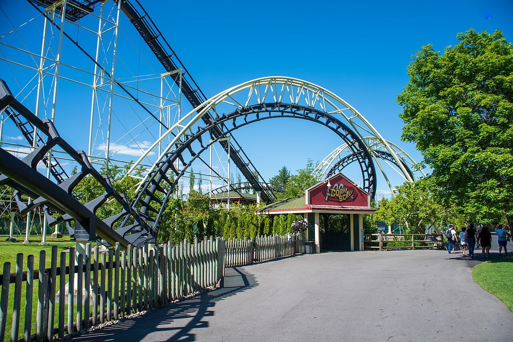

A short drive
Silverwood Theme Park
Looking for family fun? Silverwood Theme Park is just a short drive from Spirit Lake and features thrilling roller coasters, family rides, live entertainment, and Boulder Beach Water Park. It’s one of the Northwest’s most popular attractions and makes a perfect day trip during your stay.
Photo: Matt Nelson, CC BY 2.0, via Wikimedia Commons